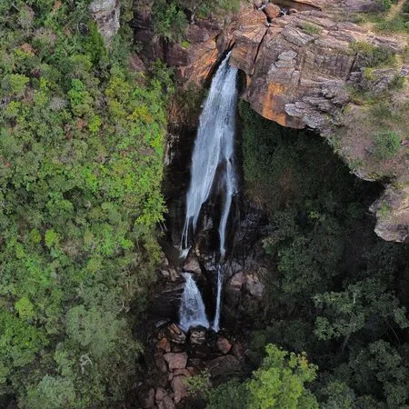
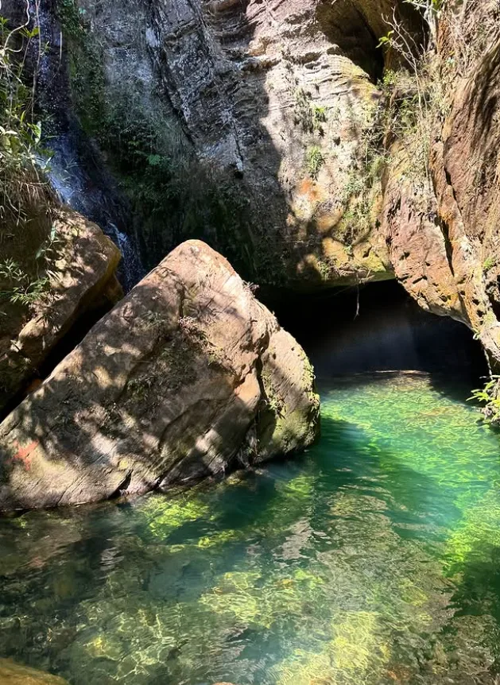
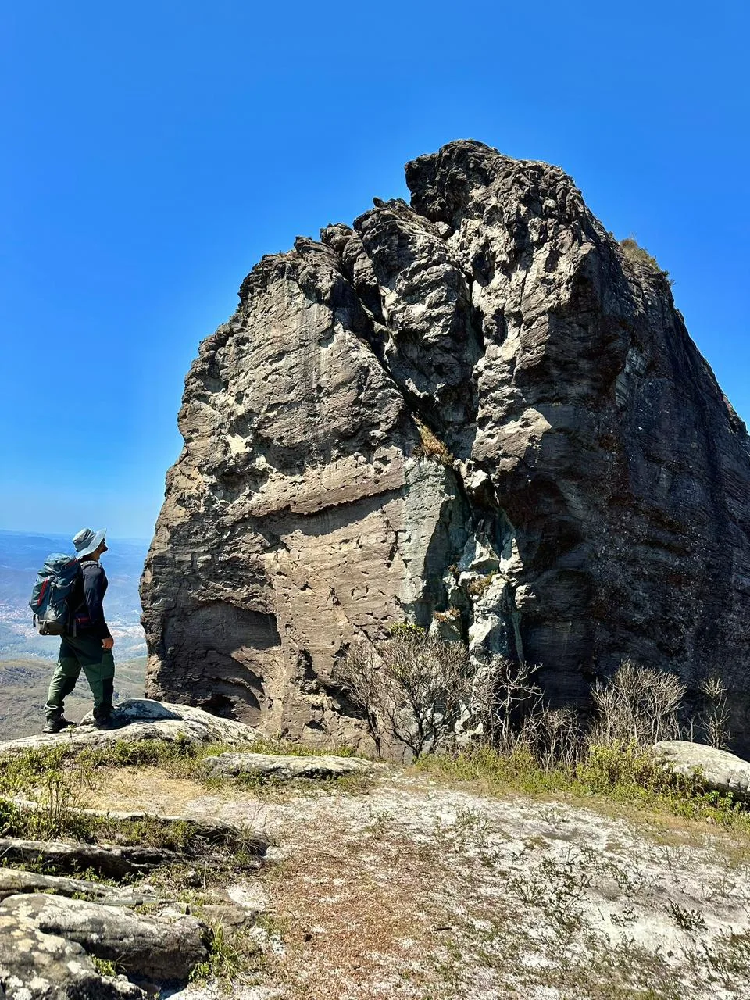

Preparando a trilha...
Ecoturismo · Ouro Preto — MG
Trilhas, cachoeiras e aventura guiadas por quem vive e cuida da montanha.
1 Escolha o roteiro



2 Data do passeio
3 Seu nome
Selecione um roteiro para continuar
Visitaremos as principais cachoeiras que compõem o parque, desfrutando da natureza e essência local.
Mediado por um Historiador especializado para a explicação e contextualização de toda a história barroca!
Imersão na natureza acompanhada de muita sabedoria local. Visitaremos as cachoeiras mais sagradas da região.
A Serra do Itacolomi é um dos territórios mais emblemáticos de Minas Gerais. Marco geográfico e simbólico de nossa história.
Natureza, história, memória e relação humana com a montanha se entrelaçam ao longo de antigos caminhos, trilhas e cursos d'água. Uma experiência guiada, conduzida no ritmo do grupo e na leitura da paisagem.
Baseado em 366 avaliações no Google
"Experiência incrível! O Joaquim foi um guia atencioso, conhece cada trilha até o Pico do Itacolomi como a palma da mão. Recomendo demais para quem quer contato de verdade com a natureza."
Mariana S.
Há 2 meses
"Passeio às cachoeiras foi maravilhoso, equipe super organizada e preocupada com a segurança do grupo. Deu pra sentir o cuidado com o meio ambiente em cada detalhe."
Rafael T.
Há 1 mês
"Roteiro sob medida pro nosso grupo, no nosso ritmo. Deu pra ver o cuidado da Treki com quem tá começando a trilhar agora. Já quero voltar para os próximos passeios!"
Camila O.
Há 3 semanas
Conduzidos por guias como o Joaquim, elogiados pela simpatia e pelo profundo conhecimento da vegetação e das histórias da região.
Ecoturismo de verdade: respeito ao patrimônio, preservação ambiental e o compromisso de não deixar rastros nas trilhas.
Roteiros no ritmo do grupo — de caminhadas leves a cachoeiras e à subida do Itacolomi. Cada passeio no seu tempo.
Nota no Google
Aventureiros Guiados
Guias Locais
Nas Trilhas